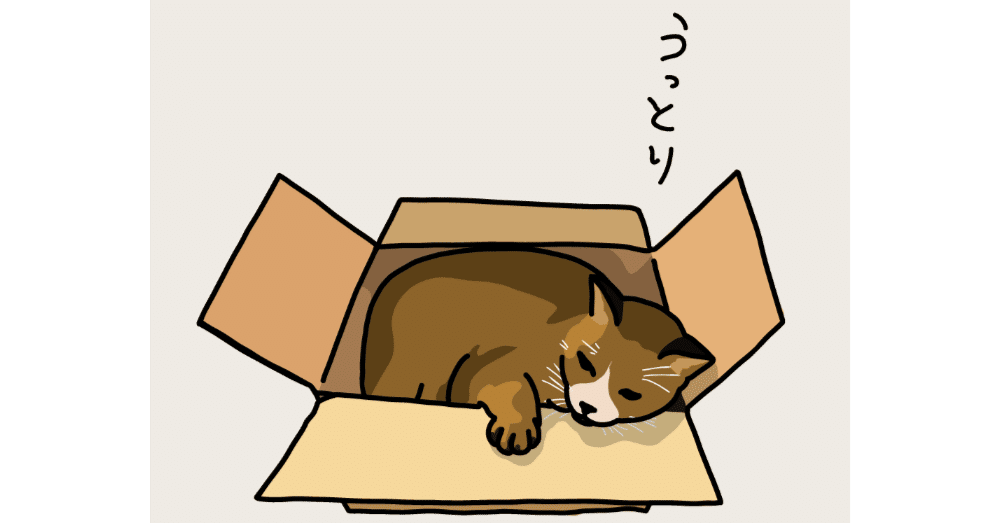

【2024年1月25日追記】
当初は翌週投稿の予定でしたが、本記事で取り上げている星野源さんの43歳のお誕生日が1月28日ということを今さら知ってしまったため、「本人がこのnoteを読むわけないだろうけど、お祝いの意味も込めて、バースデーの前日(つまりは今日)にアップしておこう！」と思い立ち、急遽本日公開させていただきます。Happy birthday！！！
今回は僕史上最もハマっている著名人、星野源の話をしたい。
これを書いている2023年12月27日。
世の中より少し早めに仕事を納め、帰路についていた僕の頭の中は「今晩何しよう？」。もはやこれしか考えていなかった。
師走とは言い得て妙で、ここのところ仕事でバタバタしていたので、この年末年始はゆっくり休んで楽しいことをしようと思ってはいたものの、具体的に何をしようか。
たまりにたまったドラマやバラエティー番組を視聴したり、自主的に購入したもののほとんど手つかず状態の書籍やゲームに触れてみたり、お気に入りのYouTuberが届けてくれる最新動画を観るのもいいな……それか、気の置けない友を今から誘って忘年会をするのも捨てがたい。
選択肢が豊富なのは基本的に良いことだと思うが、それがあまりに多いとやはり迷いに迷ってしまう。
結局、何も決まらないまま帰宅。
入浴を済ませ部屋着になった瞬間だらんと横になり、何とはなしにスマホを見ていると「そういや昨日は源さんのラジオだったな」と思い出す。早速、ラジオアプリを起動させ再生ボタンを押す。
「どうもこんばんは！星野源です」
ああ。なんて安心するのだろう。
毎回同じ挨拶から始まる「星野源のオールナイトニッポン」。再生する前から分かり切っているのに、それでもこの一言を聴くだけで「今日まで頑張った甲斐があったな！」と思える。僕の場合、そんな人は源さんしかいないわけである。
一切の誇張なしに言いたいのは、源さんのラジオにはセラピーのような効果があると思っていることだ。
茶目っ気のある進行はもちろん、リスナーからのお便りにもいつも寄り添って、心の底から会話を楽しむように言葉を重ねていく。
そのどれもが心の凝りをほぐす極上のマッサージのようで、ラジオを聴き終わるといつの間にか心身が軽くなっている。僕の場合どんなに気分が落ち込んでいても、源さんのラジオを聴くだけで前を向ける。もしかしたら、精神安定剤のような効用もあるのかもしれない。
そんな実家のような安心感を得ながら、その声に耳を傾けている時、ようやく気がついた。
あれやこれやと考えて「よし！これをしよう！」といった過程を踏まえずに、反射的にそれに触れられるものこそ本当に好きなものなのだろうと。
源さんとの出会いは、2011年のソロデビュー曲『くだらないの中に』だった。
東日本大震災の日に入ったコンビニの有線で流れていて、その時に初めて聴いた曲でもある。そのことについては別の記事で詳しく書かせてもらった。
https://note.com/kaito0589/n/n90c0dba02114
それから5年後に放送されたドラマ『逃げるは恥だが役に立つ』では様々な方面でムーブメントが起こり、源さんの人気は確固たるものになった。当時僕も逃げ恥を夢中で観ていたし、未だに主題歌の『恋』を聴くと思わず恋ダンスを踊りたくなってしまう。
そして、同作で夫婦役として共演した新垣結衣とのちに結婚したことも記憶に新しい。改めて源さんの人生はドラマみたいだなとも思う。
「歌はポップで親しみやすい曲ばかりだし、演技も上手だし、コントにも出るし、マルチに活躍している人だなぁ」
そんな風に認識してはいたものの、実のところ人柄込みでその魅力にハマったのは2021年からだ。
元々ファンでもあったオードリーの若林とラジオで共演。同じ周波数同士の心地よいトークをすっかり聴き入ってしまい、この回をきっかけに僕は源さんの人柄に興味を持ち始めた。
https://note.com/kaito0589/n/n858dd064408f
それ以降、「星野源のオールナイトニッポン」を毎週聴くようになった。
緊張感のある日々を忘れさせてくれるユルい雰囲気、無邪気にはしゃぐ少年のような笑い声、自身のリリースした新曲や影響を受けた歌手について真剣に話す語り口。ラジオを通して知ることのできる内面に、僕はすっかり魅了されていた。
そして、さらにぐっと心を掴まれたのが初エッセイ集『そして生活はつづく』だった。
元々文筆家の一面があることは知っていたし、上述のラジオ回を経て源さんのエッセイ集に実際に手が伸びるまで時間はかからなかった。
ラジオでは面白い人だけど、文章はどうなんだろう。ドキドキしながらページをめくると、そこには度肝を抜かれるような面白い文章がたくさん書かれてあった。
https://note.com/kaito0589/n/n9d134526b179
えっ？ちょっと待って……歌うまいし演技うまいし文章もうまいってすごすぎない？
そんなことに気づく頃には、僕の源さんに対する熱はこれまでにないほど急激に高まっていった。
この世に存在するありとあらゆる行為の中で、唯一文章を書くことだけは一生楽しんでいける自信を持つ僕にとって、『そして生活はつづく』の軽妙で今にも踊り出しそうな文章に僕の心は完全に撃ち抜かれていた。と同時に、「文章だけでこんなに人って笑えるのか！？」という衝撃は恐らく生涯忘れることはないだろう。
『そして生活はつづく』では、僕たちが日々の暮らしでよく出くわすような悩みを赤裸々に吐露している。
あの源さんも僕たちと同じ、もしかしたら誰かには「そんな些細なことで」と言われてしまうような悩みを抱えていただなんて。今ではその名前を知らない人の方が少ないスーパースターなのに。人柄が色濃く出るエッセイでこんなにも親近感が湧く人はそういないだろう。
そこから、源さんが出しているエッセイ集を1ヶ月も経たないうちにすべて読み切ってしまった。自他ともに認める“積ん読男”の異名をとるこの僕を、こんなにも早く読了させる作家は今のところ源さんしかいない。
そして、現在。
毎日の通勤で源さんの楽曲を聴き、火曜の深夜には源さんのラジオを楽しみ、ひと息つける週末には源さんのエッセイを何度も読み返し、暇さえあれば部屋に飾ってある源さんのポスターを眺め過ごす日々の中、僕はついに入ってしまった。
「何に？」って？
源さんのメンバーシップ・Yellow Magazine+(通称:イエマガプラス)に！！！
これまでハマってきたバンドやアーティストは数あれど、僕にとって「誰かを応援するために、有料のメンバーシップやファンクラブに加入する」という行為自体初の経験だ。
そんな僕でも躊躇なく入ることのできたイエマガプラスでは、毎月更新される文章や写真を交えての近況報告、年4回開催のトーク生配信(アーカイブあり)、新曲制作に関する裏話、新進気鋭のクリエイターとの対談集などを楽しめ、さらにはライブ先行受付や限定グッズ販売も行っている。
……ってなんだここは！まるで楽園じゃないか！
まだ入会して間もないのだが、現時点で相当楽しませてもらっている。
なにより源さんの曲を聴きながらイエマガプラスに触れている時間が幸せでたまらない。ほんと、なんでもっと早くに入らなかったんだろう……。
唐突に「無人島に一つだけエンタメを持っていけるとしたら何？」と質問されたら、僕は間違いなく「イエマガプラス！」と元気よく答えるだろう。
極論、ほかのエンタメの流通がすべてストップしてしまっても、僕はこれさえあれば十二分に生きていける。それはもう自信たっぷりに。
そして、今の僕には「いつか必ず、源さんのライブに行く！」という夢がある。
社会人になってからというもの、日々の生活を成立させていくだけでも精一杯で、かつて描いた夢ですらおぼろげになっていたこの僕に数えきれないくらい活力を与えてくれる源さんには感謝してもしきれない。万が一、もし直接話せる時が訪れた日には言葉が流暢に出てくる自信はまるでないのだが、それでも第一声には忘れることのできないこの感謝の想いを伝えたいものだ。
……溢れんばかりの源さん愛を語っていたら、いつの間にか空が白み始めている。
まだまだ語り足りない気分だけど、さすがに眠気が迫ってきているのも事実。ほんの数時間前に配信されたばかりの新曲『光の跡』を聴きながら、今晩は床に就きたい。
生粋のクリエイター。そして、たまらなくユーモラス。そんな源さんに、僕の心はかつてないほど鷲掴みにされている。
くも膜下出血により一時期は生死の境を彷徨いながらも復活を果たし、今なお心踊る作品を創り続ける。そして、何度も何度も産みの苦しみに直面しながらも愚直に理想へ向かって走り続ける姿勢。さらに、一喜一憂した日常の出来事すら包み隠さず話してくれる人柄は、まだまだ無名の物書きを続けながら日々に悪戦苦闘している僕にとっても大きな励みになっている。
同じ時代に生まれてこれてよかった。今ではそんなことすら恥ずかしがらずに言えてしまう。
最近の言葉に変換するならば、今の僕はまさに「沼っている」状態だし、それならできるだけその沼に浸かっていたいとすら思う。僕にとって源さんとは、そんな風に思えるかけがえのない存在なのだ。
https://www.youtube.com/watch?v=Q-Ec_n81iyc